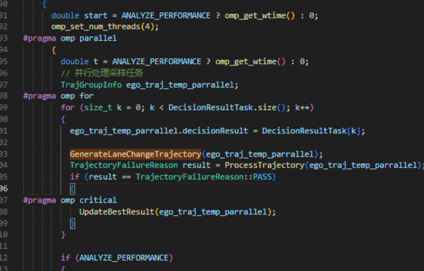

c++基本知识记录
+ [标准库函数std::move()](#%E6%A0%87%E5%87%86%E5%BA%93%E5%87%BD%E6%95%B0stdmove)
- 多线程实现的两种主要模型：OpenMP 与 线程池
- 智能指针
- C++ 智能指针:
shared_ptr与weak_ptr深度解析 - 附录：C++ 何时需要手动编写拷贝构造函数？
标准库函数std::move()
1 | |
std::move 接受一个参数，并将其转换为右值引用。右值引用是绑定到临时对象的引用，它们可以用来指示资源的移动而不是复制。
- 返回局部对象：当函数需要返回一个局部对象时，使用std::move可以避免拷贝操作，直接返回对象的资源，从而提高性能。
- 传递临时对象：当需要将一个临时对象传递给另一个作用域时，使用std::move可以优化资源的转移，避免不必要的拷贝。
- 容器操作：在STL容器中操作时，使用std::move可以避免在插入或移动元素时发生的大量拷贝操作，从而提高容器操作的效率。 例如
1 | |
可以将LaneSemgent临时实现Path的实例化，减少资源开销。
标准库函数std::stoll
C++ 标准库中的一个函数，用于将字符串转换为 long long 类型的整数。
1 | |
成员初始化列表
在C++中，构造函数名称后面跟着的冒号 (:) 是用来引入成员初始化列表（Member Initialization List）的。成员初始化列表是用来初始化类中的成员变量的一种方式，特别是当这些成员变量是引用或常量时，或者是其他需要通过构造函数来初始化的类对象时。
1 | |
这里的 : control_points_(control_points) 表示使用传入的 control_points 参数来直接初始化成员变量 control_points_。冒号后面的部分是在构造函数执行之前发生的成员变量的直接初始化。
emplace_back
emplace_back 是 C++11 中引入的一个 std::vector 容器的成员函数，它用于在容器的末尾直接构造一个元素。与 push_back 不同，emplace_back 允许你直接在容器内存中构造对象，而不需要创建一个临时对象然后再复制或移动它到容器中。
-
直接构造：
emplace_back使用提供的参数直接在容器末尾构造元素，这通常通过调用元素的构造函数来实现。 -
性能优势：由于避免了临时对象的创建、复制或移动，
emplace_back可以在某些情况下提供更好的性能，尤其是当构造的对象类型不支持移动操作，或者移动操作的开销较大时。 -
参数转发：
emplace_back支持完美转发，这意味着它可以接受任意类型的参数，并将其正确地转发给元素的构造函数。 -
用法：
emplace_back的用法与push_back类似，但是它使用构造函数参数而不是一个已经存在的对象。
函数的const关键字
在C++中，函数定义中的const关键字放在参数列表之后，表示该函数承诺不会修改类的成员变量（也称为成员属性）。在您提供的函数签名bool Path::GetProjection(const Vec2d& point, double* accumulate_s, double* lateral, double* min_distance) const中，const关键字的具体含义如下：
-
const Vec2d& point：表示point参数是一个对常量的引用，这意味着函数内部不能修改point引用的值。 -
double* accumulate_s：表示accumulate_s是一个指向double类型的指针，函数可以修改通过这个指针所指向的值。 -
double* lateral：表示lateral是一个指向double类型的指针，函数可以修改通过这个指针所指向的值。 -
double* min_distance：表示min_distance是一个指向double类型的指针，函数可以修改通过这个指针所指向的值。 -
const：位于参数列表之后，表示GetProjection是一个常成员函数（也称为“不变成员函数”），意味着在执行过程中，该函数不会修改任何类的成员变量。
简而言之，const关键字在函数参数列表之后的使用，是为了保证调用该函数不会对对象的状态（成员变量）造成任何改变。这是面向对象编程中封装性和不变性的一个重要方面。
1 | |
this指针
在C++中，this指针是一个隐式的指针，它指向当前对象的实例。当你调用一个类的成员函数时，this指针指向当前对象的实例。这个指针在类的方法和构造函数中都是可用的，并且是唯一的，因为它是当前对象的指针。
this指针的类型是const T*，其中T是当前类的类型。这意味着你可以通过this指针来访问类的成员变量和方法。
（类似于python中的self）
1 | |
lambda函数的作用域
Lambda函数的作用域是指在lambda表达式中可以访问的变量和函数的范围。Lambda函数的作用域可以分为以下几种：
-
全局作用域：
- 在lambda表达式中，可以访问全局作用域中的变量和函数。
- 全局作用域是指在lambda表达式定义的外部作用域。
-
局部作用域：
- 在lambda表达式中，可以访问局部作用域中的变量和函数。
- 局部作用域是指在lambda表达式定义的内部作用域。
-
捕获作用域：
- 在lambda表达式中，可以使用捕获列表捕获局部作用域中的变量。
- 捕获作用域是指在lambda表达式定义时，通过捕获列表捕获的变量和函数的作用域。
捕获列表用于指定lambda表达式中可以访问的变量和函数。捕获列表可以包含三种捕获方式：
-
值捕获（By Value）：
- 将局部变量的值复制到lambda表达式内部。
- 例如：
[x](int y) { return x + y; }
-
引用捕获（By Reference）：
- 将局部变量的引用传递到lambda表达式内部。
- 例如：
[&x](int y) { return x + y; }
-
捕获列表（Capture List）：
- 指定要捕获的变量和它们的捕获方式。
- 例如：
[x, &y](int z) { return x + y + z; }
在lambda表达式内部，可以按照捕获列表中的指定方式访问捕获的变量。如果捕获列表中没有指定要捕获的变量，那么lambda表达式内部不能访问局部作用域中的变量。
如果你在lambda表达式中捕获了this指针，那么你就可以直接访问对象的各个成员。this指针是一个隐式的指针，它指向当前对象的实例。在lambda表达式中捕获this指针意味着你可以在lambda内部访问和修改当前对象的成员变量和方法。
共享指针
共享指针（Shared Pointer）是C++11标准库中引入的一种智能指针，用于实现共享所有权的概念。在C++中，共享指针是通过<memory>头文件中的std::shared_ptr类模板实现的。共享指针的主要特点是多个共享指针可以指向同一个对象，并且这个对象会在最后一个共享指针被销毁或重置时自动销毁。
以下是共享指针的详细介绍：
基本概念
- 所有权共享：多个
shared_ptr实例可以共享对同一个对象的引用。每个shared_ptr都有一个关联的引用计数器，用于跟踪有多少个shared_ptr实例指向同一个对象。 - 自动内存管理：当最后一个指向对象的
shared_ptr被销毁或重置时，对象也会被自动销毁，通常是调用对象的析构函数。
1 | |
1 | |
注意事项
- 循环引用：当两个或多个对象通过共享指针相互引用时，可能会发生循环引用，导致内存泄漏。为了解决这个问题，可以使用弱共享指针（
std::weak_ptr）。 - 性能开销：共享指针比原始指针更大，因为它们需要额外的空间来存储引用计数和控制块。此外，引用计数的增加和减少可能会引入性能开销。
多线程实现的两种主要模型：OpenMP 与 线程池
在并发编程中，"多线程"是一个宽泛的概念。如何管理和调度这些线程，决定了你的程序性能和架构。我们主要讨论两种最常见的模型：
- Fork-Join (分叉-汇合) 模型：以 OpenMP 为典型代表。
- Worker-Queue (工作者-队列) 模型：以线程池 (Thread Pool) 为典型代表。
1. Fork-Join 模型 (以 OpenMP 为例)
这种模型可以被比喻为一个**“临时项目组”**。
核心思想
当程序运行到一个需要并行的繁重任务（如一个大循环）时，主线程会“分叉”(Fork)，临时创建或唤醒一个线程团队来分担工作。当任务完成后，所有线程“汇合”(Join)，临时线程被销毁或休眠，只留下主线程继续执行。
工作流程
- 分叉 (Fork)：主线程遇到
#pragma omp parallel指令。 - 并行工作 (Work)：一个线程团队（包括主线程）被创建，并共同执行
parallel区域内的代码。#pragma omp for会自动将循环任务分配给团队成员。 - 汇合 (Join)：所有线程完成工作后，在并行区域的末尾同步。
- 销毁 (Destroy)：临时线程被销毁或挂起，主线程继续执行后续代码。
核心特征
- 高层抽象：使用简单，开发者无需手动管理线程的创建、同步和销毁，只需通过
#pragma指令告诉编译器“哪里需要并行”。 - 线程生命周期短：线程的生命周期与并行区域绑定，开销相对较高（尽管现代 OpenMP 运行时会尝试复用线程以降低开销）。
- 适用场景：数据并行 (Data Parallelism)。非常适合对数组、循环等数据结构进行密集的、可预测的计算。例如：科学计算、图像处理、矩阵运算。
- 开销：每次进入和退出并行区域都有一定的调度开销。
C++ 示例代码 (OpenMP)
这个例子展示了如何使用 OpenMP 并行化一个 for 循环来计算数组中所有元素的平方和。
注意：编译时需要开启 OpenMP 支持。
- GCC/Clang:
g++ -fopenmp your_file.cpp- MSVC (Visual Studio):
/openmp
1 | |
其他案例

2. Worker-Queue 模型 (以线程池为例)
这种模型可以被比喻为一支**“常驻服务团队”**。
核心思想
程序启动时，一次性创建固定数量的“工作者”线程，让它们“常驻”并进入休眠。当有新任务时，主线程（或任何线程）将任务（一个函数或闭包）提交到一个公共的“任务队列”中。工作者线程被唤醒，从队列中取出任务并执行。执行完毕后，它们不会被销毁，而是返回队列旁继续等待下一个任务。
工作流程
- 初始化 (Initialize)：程序启动时，创建固定数量的线程。
- 等待 (Wait)：所有线程阻塞，等待“任务队列”中出现新任务。
- 提交 (Submit)：主线程将一个“任务”打包（如
std::function）并放入队列。 - 执行 (Execute)：一个空闲的工作者线程被唤醒，从队列中取出任务并执行。
- 复用 (Reuse)：任务执行完毕后，线程不会销毁，而是返回第 2 步，继续等待新任务。
核心特征
- 低层抽象：通常需要自己实现（或使用库），必须手动处理任务队列、线程同步（互斥锁、条件变量）等细节。
- 线程生命周期长：线程在程序生命周期内持久存在，被反复利用。
- 适用场景：任务并行 (Task Parallelism)。非常适合处理大量、零散、并发的“小任务”，特别是 I/O 密集型操作。例如：Web 服务器处理 HTTP 请求、异步日志记录、文件批量处理。
- 开销：任务提交开销极低。避免了反复创建和销毁线程的系统开销，响应速度非常快。
C++ 示例代码 (简易线程池)
这是一个使用 C++11/14/17 特性（std::thread, std::mutex, std::condition_variable）实现的最小化线程池。
1 | |
总结对比
| 特性 | Fork-Join (以 OpenMP 为例) | Worker-Queue (以线程池为例) |
|---|---|---|
| 线程生命周期 | 临时的 (与并行区域绑定) | 持久的 (在程序生命周期内复用) |
| 核心思想 | “这段代码给我用多线程跑。” | “我有一堆任务，帮我找空闲线程跑。” |
| 任务开销 | 较高 (线程创建/唤醒/销毁开销) | 极低 (仅入队和同步开销) |
| 适用场景 | 数据并行 (计算密集型) (如：大循环, 科学计算) |
任务并行 (I/O密集型或异步) (如：Web服务器, 处理并发请求) |
| 使用复杂度 | 非常简单 (编译器指令 #pragma) |
相对复杂 (需手动管理队列和同步) |
智能指针
好的，这是一份为你准备的关于 std::shared_ptr 和 std::weak_ptr 的深度解析 Markdown 文档。这份文档非常适合用于面试准备和技术复习。
在 C++11 中，智能指针的引入是现代 C++ 内存管理的核心。std::shared_ptr 和 std::weak_ptr 旨在解决复杂的对象所有权和生命周期问题。本文将深度解析这两者的工作原理、核心用途以及它们如何协同解决 C++ 中最棘手的内存泄漏问题之一：循环引用。
shared_ptr 是一种**“共享所有权”**的智能指针。它允许多个 shared_ptr 实例指向同一个内存对象。
它是如何工作的？(引用计数)
shared_ptr 的核心机制是引用计数 (Reference Counting)。
- 控制块 (Control Block): 当第一个
shared_ptr被创建时（或通过std::make_shared），它会在堆上额外分配一小块内存，称为“控制块”。这个控制块独立于被管理的对象。 - 强引用计数 (Strong Reference Count): 这是控制块中的一个整数，
use_count()返回的就是它。- 当一个新的
shared_ptr拷贝或赋值给另一个shared_ptr时，这个计数 +1。 - 当一个
shared_ptr被销毁（例如离开作用域）或指向其他对象时，这个计数 -1。
- 当一个新的
- 自动销毁: 当强引用计数降至 0 时，意味着没有任何
shared_ptr再指向该对象。此时，shared_ptr会自动删除（delete）它所管理的对象，并随后释放控制块。
永远优先使用 std::make_shared 来创建 shared_ptr，而不是 new。
1 | |
为什么？ std::make_shared 只需要一次堆内存分配（同时为对象和控制块分配）。而 new 的方式需要两次堆内存分配（一次为 new MyClass()，一次为 shared_ptr 的控制块），这会带来性能开销和潜在的异常安全问题。
1 | |
shared_ptr 如此强大，但它有一个致命缺陷：循环引用 (Circular Reference)。
问题定义
当两个（或多个）对象通过 shared_ptr 相互指向对方，形成一个“引用闭环”时，它们的强引用计数将永远无法归零。
- 对象 A 持有指向 B 的
shared_ptr。 - 对象 B 持有指向 A 的
shared_ptr。
A 的析构依赖 B 的析构（因为 A 持有 B），B 的析构也依赖 A 的析构（因为 B 持有 A）。这导致了一个死锁，两个对象的析构函数都永远不会被调用，造成内存泄漏。
代码陷阱 (内存泄漏示例)
让我们定义 Person 和 Pet，它们互相持有对方。
1 | |
为什么会泄漏？
- 离开作用域时，
alice(shared_ptr) 被销毁，Person("Alice")对象的强引用计数从 2 减为 1。不为 0。 doggy(shared_ptr) 被销毁，Pet("Doggy")对象的强引用计数从 2 减为 1。不为 0。- 由于两个对象的计数都不为 0，它们都不会被删除。它们持有的对方的
shared_ptr也不会被销毁。内存泄漏发生。
3. std::weak_ptr (弱指针) - 解决方案
weak_ptr 被设计出来专门解决 shared_ptr 的循环引用问题。
是什么？
weak_ptr 是一种**“非拥有型”或“观察型”**智能指针。
- 它必须从一个
shared_ptr或另一个weak_ptr构造。 - 它不会增加或减少强引用计数（
use_count）。它只增加“弱引用计数”。 - 它“观察”
shared_ptr所管理的对象，但不控制该对象的生命周期。 - 它不能被直接解引用（即不能使用
*或->），因为它不保证所观察的对象一定还存活。
weak_ptr 的核心用法：lock()
既然 weak_ptr 不保证对象存活，我们如何安全地使用它？
答案是：lock() 方法。
lock() 是 weak_ptr 最核心的函数。它是一个**“检查并获取”**的操作：
- 检查:
lock()会（原子地）检查它所观察的对象是否还存活。 - 获取:
- 如果对象已销毁（强引用计数为 0），
lock()返回一个空的shared_ptr（即nullptr）。 - 如果对象还活着，
lock()返回一个有效的shared_ptr，并且这个返回的shared_ptr会使强引用计数 +1。
- 如果对象已销毁（强引用计数为 0），
这个机制保证了，只要你持有 lock() 返回的那个 shared_ptr，你就可以绝对安全地访问该对象，不用担心它在你使用过程中被销毁。
1 | |
为什么这次成功了？
- 离开作用域时，
alice(shared_ptr) 被销毁。Person("Alice")对象的强引用计数从 1 减为 0。（doggy->owner是weak_ptr，不计入计数！） Person("Alice")计数为 0，被立即析构。- 在
~Person()中，alice->pet(一个shared_ptr) 被销毁。 - 这导致
Pet("Doggy")对象的强引用计数从 2 减为 1。 - 同时，
doggy(shared_ptr) 也被销毁，Pet("Doggy")对象的强引用计数从 1 减为 0。 Pet("Doggy")计数为 0，被立即析构。- 内存泄漏被完美解决。
4. 总结对比
| 特性 (Feature) | std::shared_ptr |
std::weak_ptr |
|---|---|---|
| 拥有所有权? | 是 (共享所有权) | 否 (观察者) |
| 引用计数 | 增加 (强引用, use_count) |
不增加 (只增加弱引用计数) |
直接解引用 (*, ->) |
可以 | 不可以 |
| 如何安全使用 | 直接使用 | 必须调用 lock() |
| 主要目的 | 自动管理对象生命周期 | 解决 shared_ptr 循环引用 |
| 是否可为空 | 可以 | 可以 |
如何使用weak ptr
解决方案：lock() 方法
为了安全地访问 weak_ptr 指向的对象，C++ 提供了一个唯一的、标准的方法：lock()。
lock() 方法是 weak_ptr 的灵魂，它做两件事：
- 检查： 它原子地（线程安全地）检查它所观察的对象是否还存活（即强引用计数是否大于0）。
- 获取：
- 如果对象还活着：
lock()会返回一个有效的std::shared_ptr，这个shared_ptr会共享该对象的所有权，并使其强引用计数 +1。 - 如果对象已经死了：
lock()会返回一个空的std::shared_ptr（等同于nullptr）。
- 如果对象还活着：
“检查-并-使用”的标准模式
因此，你永远不应该“尝试”解引用 weak_ptr。你必须**“先 lock()，再检查，最后使用”**。
这是在 C++ 中使用 weak_ptr 的标准““圣经””式代码：
1 | |
“weak_ptr 不能直接解引用，因为它不保证对象存活。必须调用它的 lock() 方法，该方法会尝试返回一个 shared_ptr。如果对象还存活，lock() 返回一个有效的 shared_ptr；如果对象已死，lock() 返回 nullptr。因此，标准用法总是在 if 语句中调用 lock()，在 if 块内部安全地使用返回的 shared_ptr。”
1. 核心特性：独占、轻量、可移动
1. 独占所有权 (Exclusive Ownership)
这是 unique_ptr 的核心。在任何时刻，内存中的一个对象只能被一个 unique_ptr 所拥有。
当 unique_ptr 被销毁时（例如离开作用域），它所拥有的对象也会被自动 delete。
2. 轻量级 (Lightweight)
unique_ptr 是“零成本抽象”的典范。
- 它没有引用计数。
- 它没有控制块（与
shared_ptr不同）。
在大多数情况下，一个 unique_ptr 的大小与一个原始指针完全相同（例如，64位系统上为8字节）。它几乎和使用裸指针（raw pointer）一样高效，但却提供了 RAII 带来的绝对内存安全。
3. 不可复制，但可移动 (Non-Copyable, Movable)
unique_ptr 的独占性在 C++ 语法层面上被严格执行。
-
不可复制 (Non-Copyable): 它的拷贝构造函数和拷贝赋值运算符都被删除 (deleted)。你不能“复制”一个
unique_ptr，因为这会违反“独占”所有权。1
2std::unique_ptr<Widget> ptr1 = std::make_unique<Widget>();
// std::unique_ptr<Widget> ptr2 = ptr1; // 编译错误! (Cannot copy) -
可移动 (Movable): 独占所有权可以被**“转移” (Transfer)。这是通过移动语义 (Move Semantics)** 实现的。当你“移动”一个
unique_ptr时，原指针会放弃所有权（变为空指针），新指针会接管所有权。1
2
3
4
5
6
7
8std::unique_ptr<Widget> ptr1 = std::make_unique<Widget>();
// 使用 std::move 显式转移所有权
std::unique_ptr<Widget> ptr2 = std::move(ptr1);
// 此时:
// ptr2 拥有 Widget 对象
// ptr1 变为了 nullptr，不再拥有任何东西
2. 如何创建与使用
如何创建？(std::make_unique)
与 shared_ptr 对应，C++14 引入了 std::make_unique。这是创建 unique_ptr 的首选方式。
1 | |
| 特性 (Feature) | std::unique_ptr |
std::shared_ptr |
|---|---|---|
| 所有权 (Ownership) | 独占的 (Exclusive) | 共享的 (Shared) |
| 性能开销 (Overhead) | 无 (等同于裸指针) | 有 (控制块 + 引用计数) |
| 复制 (Copy) | 禁止 (Deleted) | 允许 (引用计数+1) |
| 移动 (Move) | 允许 (转移所有权) | 允许 |
| 主要用途 | 对象的默认内存管理 | 必须共享所有权的罕见情况 |
5. 总结：何时使用？
-
默认使用
std::unique_ptr: 当你需要一个在堆上分配、有明确生命周期、且不需要被共享的对象时（即 99% 的情况），unique_ptr都是你的第一且唯一的选择。 -
只在必要时使用
std::shared_ptr: 当你无法确定对象的“最后拥有者”时（例如，在图结构、回调、多线程数据共享中），才被迫使用shared_ptr。 -
只在打破
shared_ptr循环时使用std::weak_ptr: 它的存在只是为了辅助shared_ptr。
附录：C++ 何时需要手动编写拷贝构造函数？
核心答案：当类需要手动管理资源时
最常见的情况就是：类中包含了裸指针（raw pointer），并且这个类负责管理该指针所指向的内存（例如，在构造函数中 new 分配内存，在析构函数中 delete 释放内存）。
为什么默认拷贝构造函数不行？
1. 默认行为：“浅拷贝” (Shallow Copy)
- 如果你不写，C++编译器会为你生成一个默认的拷贝构造函数。
- 它的工作是逐个复制成员变量。
- 当成员变量是指针时，它只会复制指针的地址，而不会复制指针所指向的数据内容。
2. “浅拷贝”引发的问题
浅拷贝导致两个对象（原对象和新拷贝的对象）内部的指针指向同一块内存，这会引发严重错误：
- 重复释放 (Double Free):
- 当第一个对象被销毁时，其析构函数会
delete掉这块内存。 - 当第二个对象被销毁时，它会尝试
delete同一块已经被释放的内存，导致程序崩溃。
- 当第一个对象被销毁时，其析构函数会
- 数据污染:
- 两个对象共享同一份数据。
- 通过一个对象修改数据，会“意外地”影响到另一个对象，破坏了对象的独立性。
解决方案：“深拷贝” (Deep Copy)
为了解决这个问题，我们必须手动编写拷贝构造函数，在其中执行“深拷贝”：
- 分配新资源： 在新对象的构造函数中，为新对象的指针
new一块新的内存空间。 - 复制内容： 将原对象指针所指向内存中的数据内容，完整地复制到这块新内存中。
这样，两个对象就各自拥有了独立的内存资源，可以安全地各自释放，互不干扰。
关键概念：“三/五法则” (The Rule of Three/Five)
这个问题的背后是C++著名的“三/五法则”：
- 三法则 (Rule of Three): 如果你需要手动实现析构函数、拷贝构造函数、拷贝赋值运算符中的任意一个，那么你很可能需要实现所有这三个。
- 五法则 (Rule of Five): 在C++11及以后，这套法则扩展到了五个，增加了移动构造函数和移动赋值运算符。
根本原因都是一样的：这个类在手动管理资源。
现代C++最佳实践：“零法则” (The Rule of Zero)
在现代C++（C++11及以后）中，我们应该尽量避免这种情况，遵循“零法则” (The Rule of Zero)。
- 核心思想： 使用 RAII（资源获取即初始化）原则。
- 具体实践：
- 不直接使用裸指针管理内存。
- 优先使用智能指针（如
std::unique_ptr,std::shared_ptr）来管理动态内存。 - 使用标准库容器（如
std::vector,std::string）来管理数据集合。
- 好处： 这些智能指针和容器类本身已经正确地实现了深拷贝、移动或禁止拷贝的逻辑。当它们作为成员变量时，编译器自动生成的默认拷贝（或移动）构造函数会调用这些成员的对应函数，自动就能完成正确的资源管理，你无需手动编写任何资源管理函数。